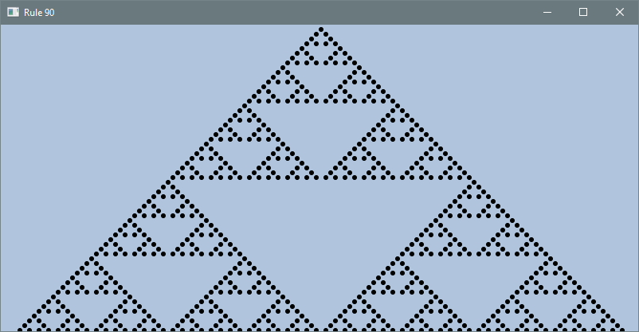

7.4 Two-Dimensional Arrays
Key terms: two-dimensional array, ragged array
7.4.1 Motivation
The Game of Fifteen, which dates back to the 19th century, is played on a 4×4 grid of tiles numbered from 1 to 15. A tile adjacent to the empty space can be moved by sliding it horizontally or vertically into the space. The goal is to rearrange the tiles in ascending order.
Figure 7.4.1a: Random and Winning Configurations
{kind=link}
In a program presenting the game to a player, how should the game state be represented? One idea might be to declare 16 integer variables for the 16 different grid positions. Each variable could store either a tile number or a value representing the empty space. But with this approach the variables do not reflect the structure of the game, so checking if a particular move is valid would require a long and tedious sequence of decision statements. Alternatively, the tile numbers could be stored in a linear array, using 16 to denote the empty space:
Figure 7.4.1b: Game State with Linear Array
{kind=link}
This is a little more intuitive but still problematic. The game state is naturally viewed as a two-dimensional (2D) grid. If the tile numbers are stored in a linear array, the programmer must mentally translate the two-dimensional adjacency relationships into the one-dimensional structure of the array. A language-level structure is needed that more naturally matches the conceptual structure of the game. The same need arises in many applications, such as spreadsheets, in which information is organized as a grid, matrix, or table.
The following code shows how to declare a 2D array to store the game state. Note that the type name for a 2D array is the same as for a linear array except that there is a second pair of brackets for the second dimension. The first dimension specifies the number of rows, and the second specifies the number of columns.
int[][] grid = new int[4][4];
A program for the Game of Fifteen might initialize the grid by first putting it into the winning
state and then working backwards to a shuffled starting state by making a series of legal random
moves — that is, by repeatedly sliding a tile chosen at random from among those that are adjacent
to the empty space. This guarantees that the initial configuration is solvable, since reversing
the same sequence of moves returns the puzzle to the winning configuration. The first part of this
initialization, putting the grid into the winning state, could be coded as shown below. The outer
loop ranges over the row indices, and for each row the inner loop ranges over the column indices.
Successive tile numbers are assigned to grid[i][j], which refers to row i and column j.
// initialize grid to the winning configuration
int tile = 1;
for (int i = 0; i < 4; i++) {
for (int j = 0; j < 4; j++) {
grid[i][j] = tile++;
}
}
7.4.2 Arrays of Arrays
A computer’s memory is really a vast linear array of bytes, so how exactly should a 2D array be
understood in terms of physical storage? The answer is that a 2D array is implemented as an array
whose elements are themselves arrays. Thus, although Java provides convenient syntax for working
with two-dimensional arrays, the underlying representation is really an array of arrays. To make
this clear, the code below shows how an initializer list could be used to put grid into the
winning state (compare with the preceding loop-based initialization). Recall that an initializer
list is a comma-separated sequence of array elements inside curly braces. Here the elements of the
outer array are themselves arrays representing the rows of grid, each initialized with its own
initializer list.
int[][] grid = {
{1, 2, 3, 4},
{5, 6, 7, 8},
{9, 10, 11, 12},
{13, 14, 15, 16}
};
Figure 7.4.2: How the Array is Represented in Memory
{kind=link}
The following code shows how to traverse a 2D array with a for-each loop. The outer loop iterates
over the rows of grid, each of which is a linear array. For each row, the inner loop iterates over
its int elements.
// output the grid in tabular format
for (int[] row : grid) {
for (int tile : row) {
System.out.printf("%2d ", tile);
}
System.out.println(); // insert newline after each row
}
Listing 7.4.2a brings these ideas together in a simple program.
Listing 7.4.2a - AnimalTable.java
package chap07.sect4;
import java.util.Arrays;
/**
* Displays a table of animal names before and after sorting each row.
*
* @author Drue Coles
*/
public class AnimalTable {
public static void main(String[] args) {
String[][] animals = {
{"gorilla", "buffalo", "lobster", "cheetah"},
{"penguin", "quetzal", "meerkat", "octopus"},
{"vulture", "whippet", "raccoon", "wallaby"}
};
System.out.println(toString(animals));
for (String[] row : animals) {
Arrays.sort(row);
}
System.out.println(toString(animals));
}
/**
* Returns a string representation of a 2D array with rows separated by newlines.
*/
private static String toString(String[][] arr) {
String result = "";
for (String[] row : arr) {
for (String item : row) {
result += item + " ";
}
result += "\n"; // end of row
}
return result;
}
}
Output 7.4.2a
gorilla buffalo lobster cheetah
penguin quetzal meerkat octopus
vulture whippet raccoon wallaby
buffalo cheetah gorilla lobster
meerkat octopus penguin quetzal
raccoon vulture wallaby whippet
Listing 7.4.2b illustrates a graphical application of 2D arrays. The program implements a simple mathematical process known as Rule 90. Starting with a single 1 in the center of the first row, each subsequent row is computed from the previous one according to a fixed rule. The rows therefore represent successive time steps, while the columns represent positions in space. Displaying the completed array reveals that Rule 90 provides an alternative construction of the Sierpiński triangle (see Section 6.2.3).
Listing 7.4.2b - Rule90.java
package chap07.sect4;
import javafx.application.Application;
import javafx.scene.Scene;
import javafx.scene.layout.Pane;
import javafx.scene.paint.Color;
import javafx.scene.shape.Circle;
import javafx.stage.Stage;
/**
* Displays a time-space diagram of a sequence of bits updated by Rule 90. At discrete steps, each
* bit becomes the exclusive-or of its two neighbors. The initial configuration consists of a 1 in
* the middle and 0s everywhere else. From this configuration, a structured pattern emerges over
* time.
*
* @author Drue Coles
*/
public class Rule90 extends Application {
@Override
public void start(Stage stage) {
final int width = 800;
final int height = 385;
Pane root = new Pane();
Scene scene = new Scene(root, width, height, Color.LIGHTSTEELBLUE);
// drawing constants
final int radius = 3;
final int diameter = 2 * radius;
final int numCells = width / diameter;
// Computes the space-time history of a sequence of bits evolving according to Rule 90.
// Row k represents the sequence at time k. The sequence starts with a 1 in the center
// and 0s elsewhere.
int[][] grid = spaceTimeHistoryRule90(numCells);
// display the grid
for (int row = 0; row < numCells; row++) {
for (int col = 0; col < numCells; col++) {
if (grid[row][col] == 1) {
int x = diameter + col * diameter;
int y = diameter + row * diameter;
root.getChildren().add(new Circle(x, y, radius));
}
}
}
stage.setTitle("Rule 90");
stage.setScene(scene);
stage.show();
}
/**
* Creates and returns an n x n array of bits, initializing the first row with a 1 in the center
* and 0s everywhere else. Each subsequent row is obtained from the previous one by applying
* Rule 90.
*/
private static int[][] spaceTimeHistoryRule90(int n) {
int[][] grid = new int[n][n];
grid[0][n / 2] = 1; // initial condition: a single 1 in the center
for (int i = 1; i < n; i++) { // fill rows 1, 2, ..., n-1
for (int j = 0; j < n; j++) { // calculate the j-th bit in row i
int left = get(grid, i - 1, j - 1);
int right = get(grid, i - 1, j + 1);
grid[i][j] = left ^ right; // Rule 90 (XOR)
}
}
return grid;
}
/**
* Returns grid[i][j] if j is in bounds, and 0 otherwise.
*/
private static int get(int[][] grid, int i, int j) {
if (j < 0 || j >= grid[i].length) {
return 0;
}
return grid[i][j];
}
public static void main(String[] args) {
launch(args);
}
}
Output 7.4.2b

7.4.3 Ragged Arrays
Occasionally, a programmer needs a 2D array whose rows have different lengths. This is called a ragged array. Since a 2D array is an array of arrays, declaring a ragged array is simple. Only the number of rows is specified in the declaration. Each row is then created separately and may have a different length. For example:
int[][] x = new int[3][];
x[0] = new int[8];
x[1] = new int[10];
x[2] = new int[6];
x[1][6] = 97;
Figure 7.4.3: Representation in Memory
{kind=link}
7.4.4 Multidimensional Arrays
The syntax for multidimensional arrays is a straightforward extension of the 2D case: an extra set of brackets is needed for each extra dimension. As a practical example, consider a program that stores daily temperatures recorded at a particular location throughout the twentieth century. The following statement declares a 3D array for this purpose.
int[][][] temperature = new int[13][32][100];
The three dimensions correspond to month, day, and year. The first index represents the month and
ranges from 1–12, the second represents the day and ranges from 1–31, and the third represents the
year and ranges from 0–99. Index 0 is unused for the month and day dimensions. In this scheme, the
temperature on June 18, 1986, would be stored at temperature[6][18][86].
If hourly rather than daily temperatures were needed, a fourth dimension could represent the hour of the day.